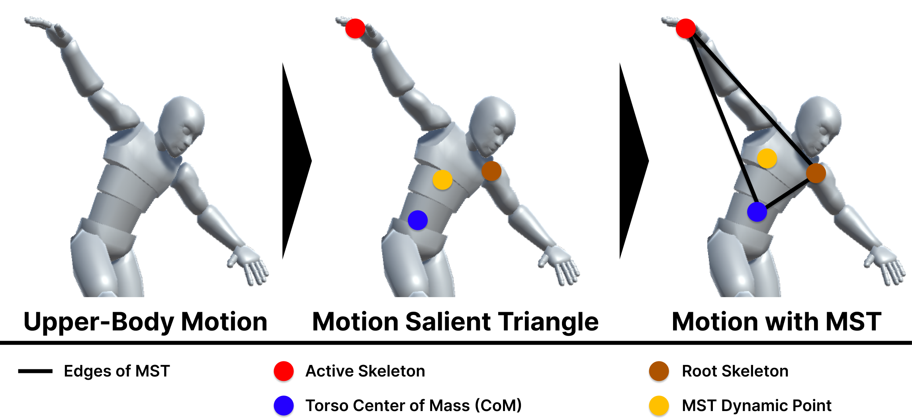
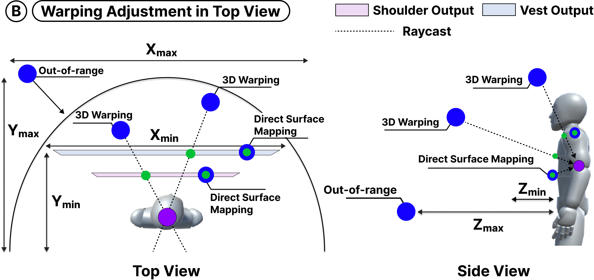
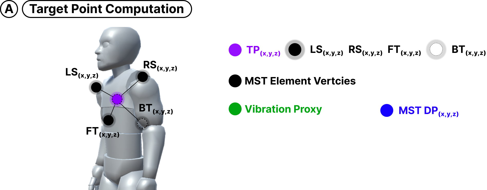
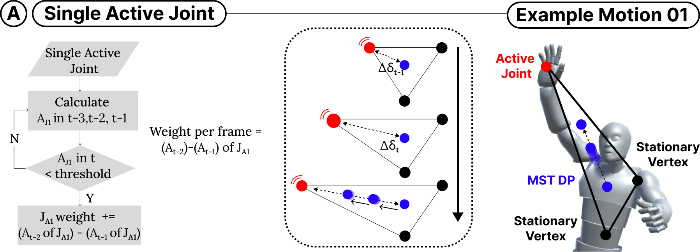
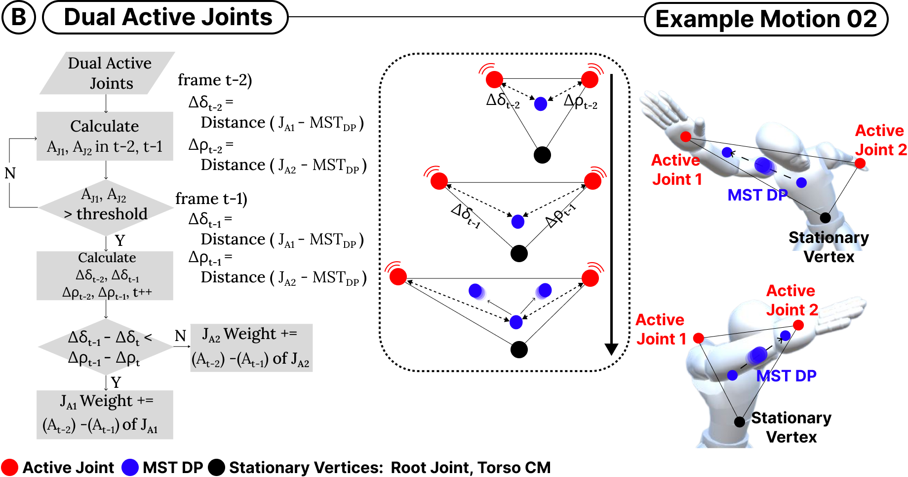

Motion-to-Tactile Framework
Rendering with MST
Previous researchers introduced a haptic effect using an RGB-image-based visual saliency map that works with audio data. In our case, we add 3D motion data to accommodate every movement of the performer into a meaningful haptic effect. We propose a motion salient triangle (MST) that aims to effectively translate characteristics of movements into vibrotactile haptic feedback. In this section, we describe our novel rendering design approach using the proposed MST. Our rendering approach using MST processes spatiotemporal parameters extracted from three-dimensional (3D) joint coordinates.




